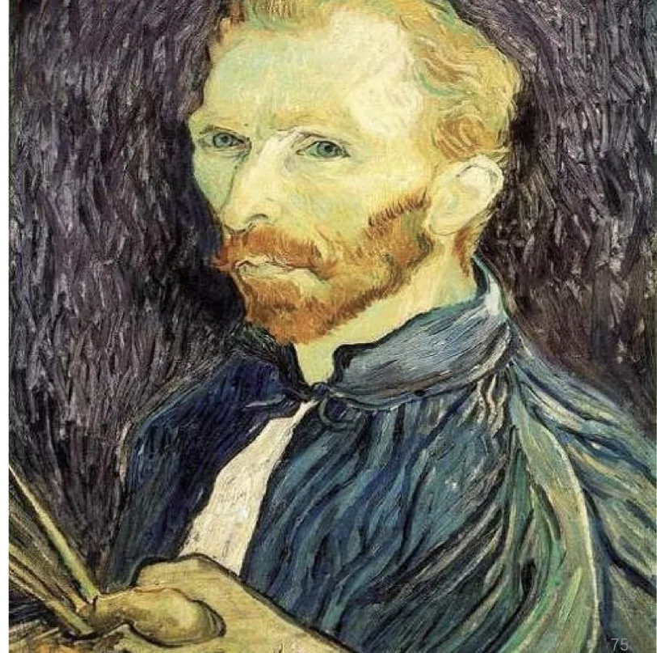
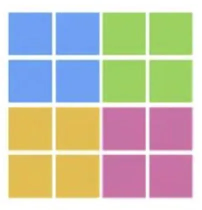
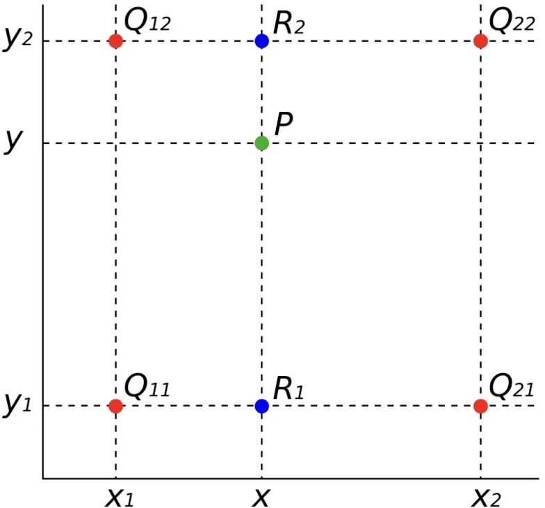
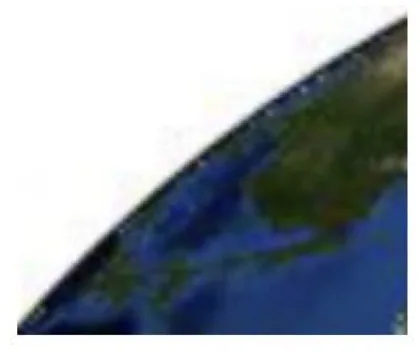

计算机视觉 · 第 2 章 图像处理基础
2.13 图像放大——插值方法
上一节讲的是把图像缩小，这一节换到相反的方向：把图像放大。放大的难处不在于「多出了一些像素」，而在于这些新增位置的灰度值原本并不存在——输入图像只在整数坐标上留下采样值，放大后的网格更密，落在采样点之间的位置只能靠周围的已知点估出来，这个过程就是插值（interpolation）。课件由易到难讲了三种方法：最近邻、双线性、双三次，并把双线性插值沿 X 方向的那一步推导完整写了出来。
1. 放大要解决什么问题
放大后的图像网格比原图更密，待求点 (x, y) 常常落在四个原始采样点的中间。这些位置没有被测量过，它的灰度值必须由邻域里已有的采样值推算。所以「图像放大」在算法层面就是一道估计题：用什么邻域、用什么函数把邻域里的值组合成新值。
三种方法的差别恰好落在这两点上。最近邻只看离得最近的那 1 个采样点；双线性看 2×2 共 4 个点，在两个方向上各做一次线性插值；双三次看 4×4 共 16 个点，两个方向各用一个三次多项式。邻域从 1 个点扩到 16 个点，估计用到的信息越来越多，计算量也跟着上升。

2. 最近邻插值
最近邻（nearest neighbor）的算法基本思想是：令新增像素的灰度值等于距它最近的输入像素灰度值。换个角度看，就是每个输入像素把自己的灰度值让给离它最近的一片新像素，于是放大后的局部会出现一块块同灰度的方块。
它胜在计算简单：判断远近只需要比较坐标，取的是现成的灰度值，不必做任何乘加运算。代价是不够精确，放大后的边缘会出现锯齿现象——本来连续的斜边被量化成一级级台阶。原因也很直白：它完全没有利用邻近像素之间的灰度关系，只是把最近的一个值搬了过来。

3. 双线性插值：把二维拆成两次一维
双线性（Bilinear）插值把邻域从 1 个点扩大到 4 个点，并且把二维插值拆成两次一维插值。课件给出的算法基本思想就是这个两步：
- 第一步，沿 X 方向线性插值：在 Q11 与 Q21 之间插入点 R1，在 Q12 与 Q22 之间插入点 R2；
- 第二步，沿 Y 方向线性插值：用第一步算出的 R1 和 R2，在 Y 方向插值计算出待求点 P。
这四个已知点就是包住待求点的 2×2 网格的四个角：Q11、Q21 落在 y = y1 这条水平线上，Q12、Q22 落在 y = y2 这条水平线上，而待求点的横坐标 x 介于 x1 与 x2 之间。先横后纵的顺序是关键——第一步把两条水平线各自压缩成一个点，第二步再在这两个点之间插出最终结果，二维问题于是化成了两个一维问题。

4. 双线性插值的推导
课件把沿 X 方向的这一步推导写全了（原课件第 79 张）。一维线性插值的依据是：两个已知点之间的函数值随坐标线性变化，也就是这一段上的斜率处处相等。R1 落在 Q11 与 Q21 之间，横坐标是 x、纵坐标仍是 y1，所以 f(R1) = f(x, y1)；把这个位置代入斜率相等的关系，再逐步解出 f(R1)，就是课件给出的推导：
f(R1) = f(x, y1)
f(Q21) - f(Q11) f(R1) - f(Q11)
--------------- = ---------------
x2 - x1 x - x1
f(R1) - f(Q11) = (x - x1) · [f(Q21) - f(Q11)] / (x2 - x1)
f(R1) = f(Q11) + (x - x1) · [f(Q21) - f(Q11)] / (x2 - x1)这个结果的读法是：以 Q11 的灰度值为基准，按待求点到 Q11 的距离占整段区间长度的比例，在 Q11 与 Q21 之间做线性过渡。可以顺手验证两端：x 落在 x1 上时结果回到 f(Q11)，落在 x2 上时结果回到 f(Q21)，与已知采样值对得上。
沿 Y 方向的第二步用同一个式子，只要把两点换成 R1 与 R2、把横坐标换成纵坐标：
f(P) = f(R1) + (y - y1) · [f(R2) - f(R1)] / (y2 - y1)把两步合起来看，P 的灰度值最终是那四个角点灰度值的加权平均，权重由待求点到四个角的相对距离决定——这正是它比最近邻精确的原因：每个新像素都在参考周围一圈点的意见，而不是只认最近的那一个。
5. 双三次插值
双三次（Bicubic）插值把邻域再扩一圈。课件给出的算法基本思想是：f(x, y) 的值可以通过矩形网格中最近的十六个采样点的加权平均得到，需要使用两个多项式插值三次函数，每个方向使用一个。
这两句话是配套的：十六个采样点正好是待求点周围 4×4 的网格，而一个方向上的 4 个已知点恰好能确定一个三次多项式，所以 X 方向用第一个三次多项式、Y 方向用第二个。流程和双线性一样，仍是先横后纵，只是每个方向参与计算的点从 2 个变成 4 个，插值函数从一次升到三次。精度换来的是计算量：邻域更大、函数阶数更高，开销也就更大。

本节小结
- 放大的难点在于新增像素位置没有采样值，只能由邻域估计，这就是插值。三种方法按参与估计的采样点数递增：最近邻 1 个、双线性 2×2 共 4 个、双三次 4×4 共 16 个。
- 最近邻插值令新增像素的灰度值等于距它最近的输入像素灰度值，计算简单但不够精确，放大后会有锯齿现象。
- 双线性插值分两步：先沿 X 方向在 Q11 与 Q21、Q12 与 Q22 之间插入 R1、R2，再沿 Y 方向由 R1、R2 插出 P。
- 推导的依据是线性插值的斜率相等，由 [f(Q21) − f(Q11)] / (x2 − x1) = [f(R1) − f(Q11)] / (x − x1) 逐步解出 f(R1) = f(Q11) + (x − x1) · [f(Q21) − f(Q11)] / (x2 − x1)；Y 方向照搬同一式子。
- 双三次插值用矩形网格中最近的 16 个采样点加权平均，两个方向各用一个三次多项式；它仍然只是按规则把已有像素铺开，真正要把丢失的细节补出来，要看下一节的超分辨率重建。